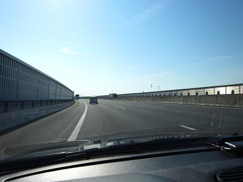 何か さすがに早すぎたからか、面白い車両の出現も無く長島到着（笑 ﾎﾟﾙｼｪｵﾌや他の方へ迷惑を最小限にするためにＰＡ奥の端っこへ。 |
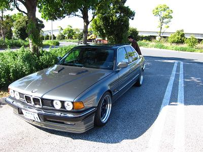 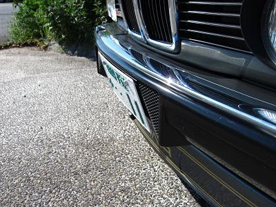 既にALPYさんが到着されていました＾＾ ALPY号も今回たくさんのモディファイを施しての参加です。 右の写真、ナンバー周辺の作りこみがカッコイイ 更に、ホイールはリアに１０Ｊのマイスターを装着！ ボンネットのダクトに４灯プロジェクター、深リム！ 独特な雰囲気が漂っている１台＾＾ |
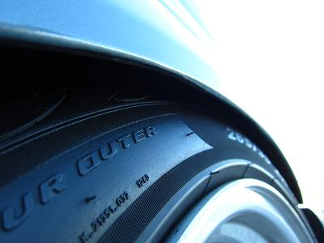 そんなNEWホイールを履いたALPY号のリヤ これでボディーと干渉しないなんて！ そんなALPY号を観察してると・・・ |
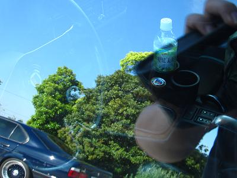 あぁ！！！ シフトノブがっ！ |
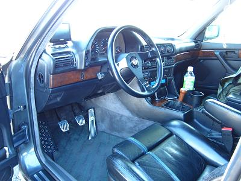 ＭＴになってるし〜！ 昨日の前夜祭でこぉ〜さんから聞いていたんですが、、実際見ると驚きます＾０＾ ALPYさんの「乗ってきていいよ」に甘えさせていただいて、少し試乗を＾＾ まず、クラッチペダルがＭゴロー号と比べてメチャ軽です！ 走り出しから、さすがのＡＬＰＩＮＡエンジン アイドリングでクラッチをつないでも、ギクシャク感なく発進してくれます。 少し踏んでみると、これまたメチャメチャスムースなエンジン！ M30エンジンで初めてシルキー感を感じれたように思います＾＾ 試乗してからいろいろＡＬＰＹさんに聞いてみると、フライホイールはダブルマスだそうで、、なんであんなに回転が軽いんだ〜！ クラッチラインも同じものを使ってるはずなのに、なんであんなにクラッチペダル軽いんだ〜！！ シフトフィールもO/Hを施された（ＡＬＰＹさんのHPへ）だけあって、カッチリ決まります！ |
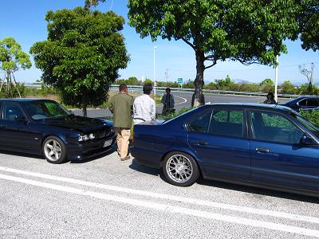 幹事のアルタァさん、関西組のbovenさん（といさん相乗り）、牛ちゃん、TINAさん到着！ boven号からは温まったタイヤのニオイが！ 激しいドライブだったんでしょうか？ 愛知からmedama1goさん、宿泊組もまもなく到着！ にぎやかになってきましたよ〜＾０＾ |
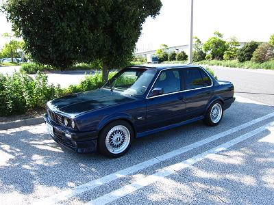 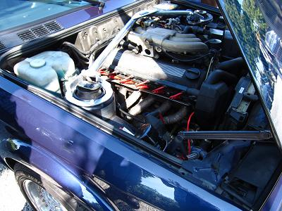 そこへ、つばめさんが相乗りでE30が登場＾＾ ボンネットがボディー同色のカーボンだったり、タコ足が入ってたり・・・ 30もアツイようだ！
|
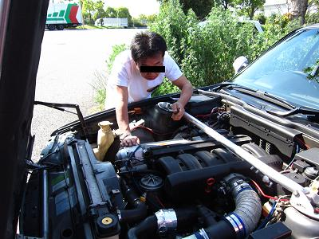 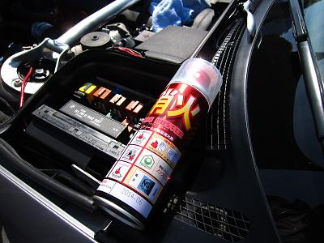 ＴＩＮＡさんと牛ちゃんはアーシングを＾＾ インジェクターにアースしてたんでしょうか？ ガソリンに引火するといけないので消火器まで準備（笑 |
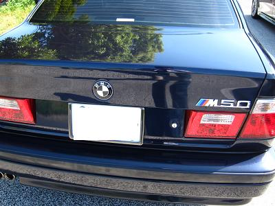 そんな牛ちゃん号は卍マークは取りはらって、エンブレムがM50に〜！ 綺麗にまとまってますね＾＾ |
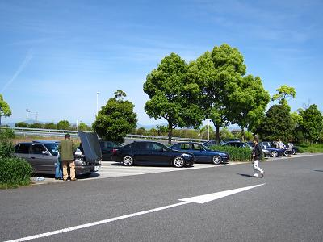 １０時前でこんな状況。 気温も暑すぎず、寒くも無く良い感じ＾＾
|
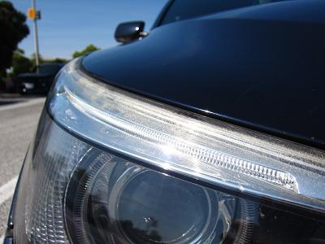 こぉ〜号ですが、、最近のＢＭＷはレンズがプラスチックなんですね〜！ 紫外線でプラスチックが劣化して曇ってくるそうだ。。 数年ごとにassy交換になってしまうのだろうか？！ |
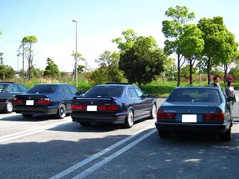 不思議と集まって駐車するＭ３０搭載車 右からＡＬＰＹ号 幹事のアルタァー号 Ｍゴロー号 |
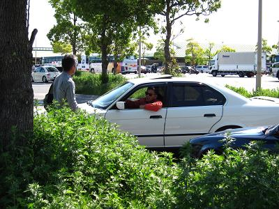 トレンディードラマ（笑）に出てきそうな雰囲気でタケさんが登場＾０＾ |
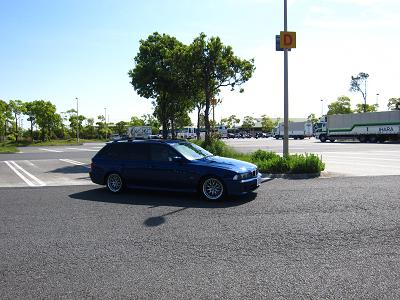 E39に乗り換えられた、むーさんも＾＾ 心惹かれる青色のＥ３９ＴＲ！ なんて名前の色なんだろう？ |
続々と集まってくる中・・・あ ぁ ぁ！！ 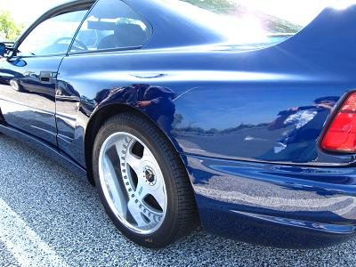 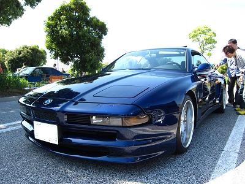 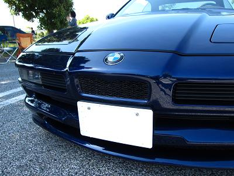 ←この特徴的なグリルを一度見てみたかった。これは KOENIG SPECIAL KS8じゃないか〜！ カタログの中だけと思っていた実車を生で見れるなんて(T_T) フロントに255を履き、リアは335の13J カウンタックと同じサイズだそうだ。 フロント255だけあって、轍には超がつくほど敏感でハンドルもロックするまでは切れないそうだ。 更にあの それにしてもカッコイイ・・・！ 日本に何台あるんだろうか。 お話を伺うと、くにぞーさんのお知り合いだそうだ。 こんなのに乗ってるお友達がいるなんて〜（驚 |
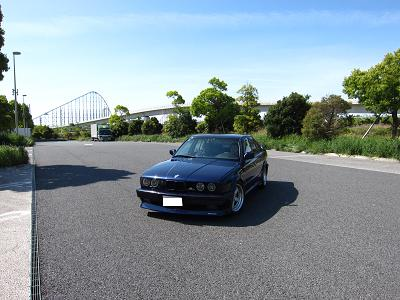 ばしひでさん相乗りでヒロさんが到着＾＾ ばしひで号は修理で長期入院中なんだとか。。 ヒロ号も今回大手術を施して長島入り！ その大手術とは！ |
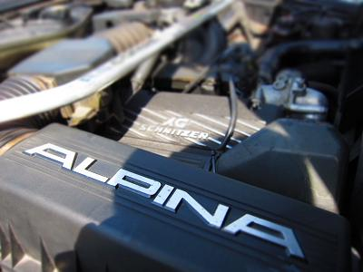 エンジンをALPINAに換装 しかもＤＩＹで（爆 見た目はSCHNITZER 中身はALPINA つけられた名前はその名も SCHNIPINA “シュニピナ” （笑 |
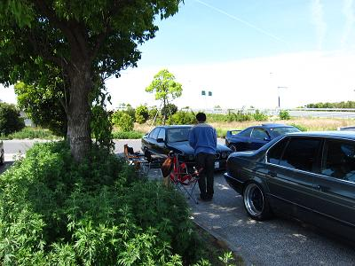 ＤＤさんも到着＾＾ 何度見てもオーナーと車のギャップに驚く（笑 |
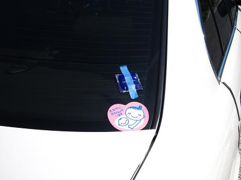 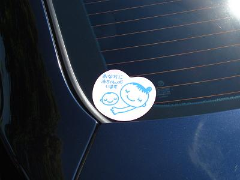 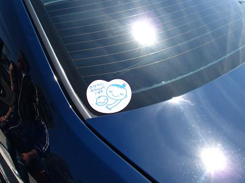 Ｍゴロー号に荷物を置きに戻ると・・・ 誰や〜！こんなシール貼ったやつは(--;) 後々このシールの貼り合い合戦に！ 他にも多数車両が被害にあった模様（笑
|
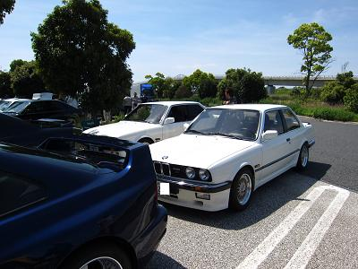 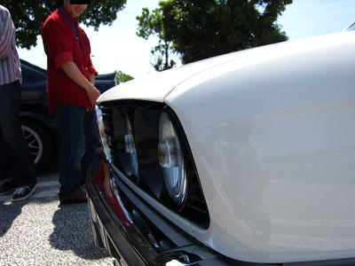 Ｅ３０乗りの方も続々と到着＾＾ 同年代だけって親近感が沸きます。 それにしても、E30も綺麗に維持してる方が多いですね〜＾＾ ＢＢＳホイールなんて隅々までピッカピカ！ どうやって掃除してるんでしょう？ その中で気になったマーシャルのヘッドライトを装着した１台。 誰かが「チ〇ビや〜」とか言ってたとか言ってないとか（笑 |
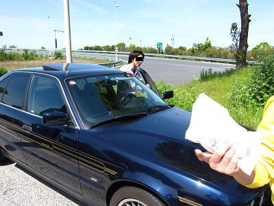 だんだんと台数が増えてきたので、２台のスペースに３台駐車すべく、手押しで詰めていきます。 |
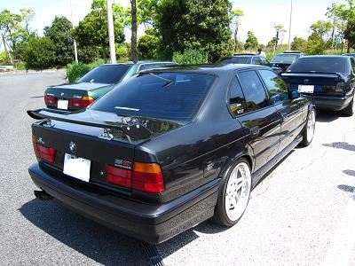 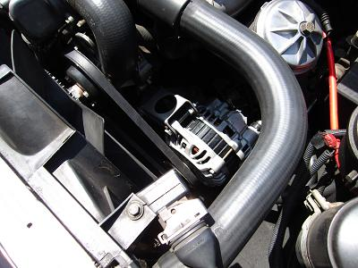 そこへＴＫさん、くにぞーさんが到着！ さいきんオルタネーターを国産流用品に交換されたんだとか＾＾ 元々の物よりも抵抗感が少なく、軽い力で発電できるようだ。 次交換する機会があればコレだな。 |
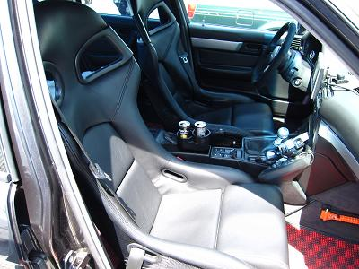 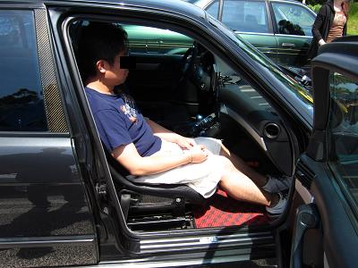 そして、シートを交換！ これだけ見て何の車種のシートか分かる人はいますか・・・？ いませんね（笑 なんと、Porsche 911GT3のシートでカーボン製 ７kgしかないそうだ。 こりゃ相当な軽量化になっているはずだ！ Ｍゴローは手動レカロシートを装着していた時期があったが、ノーマル電動シートの時に比べて車が軽くなった印象が残っている。 右の写真はシートに座ってみたこぉ〜さん＾＾ Ｍゴローも座らせてもらったがさすがフルバケ、ホールド性が良かった。 こんなので走ったらかなりヤル気にさせられますね〜！ ばしひで号が直ったら、サーキットオフだ！＾０＾！ |
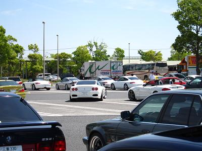 だんだんとポルシェオフに関連した車が集まってきました。 これだけいるとポルシェも「ふ〜ん」くらいにしか感じ・・・・
|
え ぇ 〜！ シルエットフォミュラー風味！
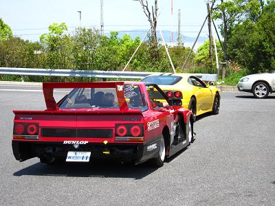 |
更に・・・ う あ あ ぁ ぁ ぁ ぁ ぁ ぁ ぁ！ 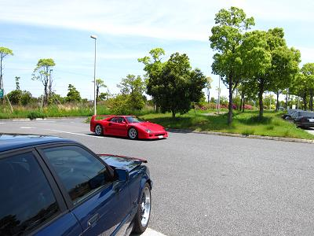 Ｆ４０！ 本の中だけと思っていた車を１日に２台も見れるなんて〜（嬉 アイドリングですら鳥肌の立ちそうな音だった。
|
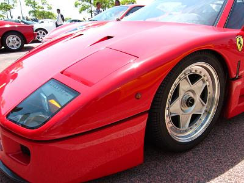 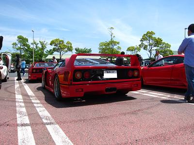 それも２台！ こんな機会滅多にありません。 舐めまわすように見てきました＾＾ M30とは比較にならないくらい極悪燃費なんだろうなぁ どうせ燃費が悪いならコッチのほうががイイナ〜（笑
|
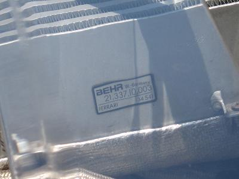 そんなF40様もインタークーラーはＢＥＨＲ製だった。
|
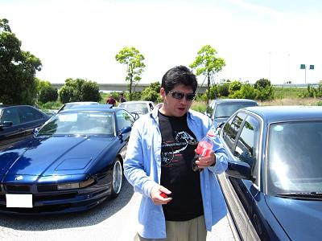 コークさんは今年もコーラ多数持参＾＾ これほどコーラが似合う人もなかなかいません（笑
|
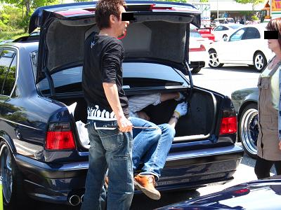 ＤＤさんがアルタァ号のトランクダンパーを交換中。 お決まりのトランクに食べられる写真は撮り損ねた(._.)
|
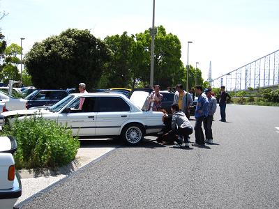 E30軍団もメンテ＾＾ 何をされてたんでしょう？
|
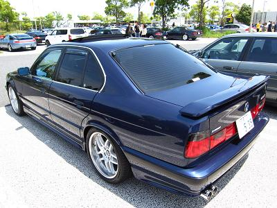 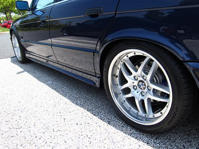 これは幹事のアルタァ号 ホイールをＢＭＷ純正の18インチに！ 今回も前回のホイールのように自家塗装されたそうだ。 リムは磨きこまれてピッカピカだ＾＾ |
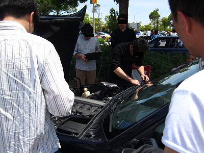 chachaさんに強制ROMチューンされるDD号（笑 どんなチューニング内容のROMだったんだろうか？きっと詳細はＤＤさんのHPで紹介されることだろう！ |
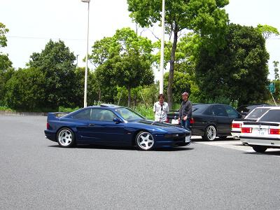 KOENIGオーナーさんが帰られるようだ。 こんな何気ない１枚でも絵になる＾＾
|
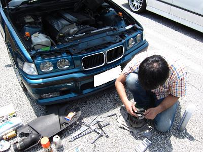 アクアマリンさんは今年もヘビーメンテ！ オルタネーターのレギュレーターの交換中。。 見にいってみると何だかワイワイガヤガヤ・・・ 本来オルタに固定されているスタッドボルトが抜けてしまったそうだ・・・ はたして無事に帰れるのか・・・？（笑 毎年ハラハラドキドキメンテなアクアマリン号！ もしかして、これはイレギュラーじゃなくてオチつけるのに仕込んでるんだな、きっと（爆 |
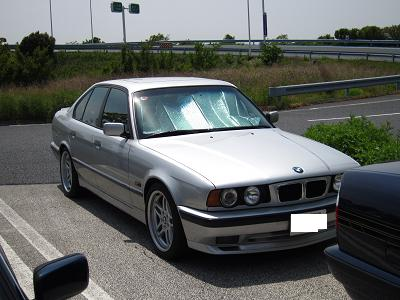 けろよんさん登場！ お久しぶりです＾＾ けろよん号も毎度のことながらピカピカだ。
|
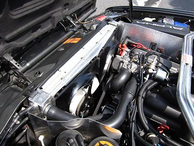 ALPY号のボンネットが開いていたので観察＾＾ ダブルマスなのに回転が軽かったのは、ファン電動化の影響なのか？！ |
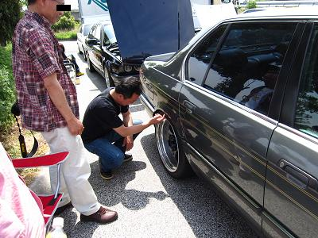 ←マウスオーバー効果あり。ＡＬＰＹ号のツライチ具合に「指も入らへんやん！」と驚きのむーさん。
|
気が付くと数名帰られた後でした。。 楽しい時間は瞬く間に過ぎていってしまいます。。
|
関東組も渋滞をさけるべく、少し早めに帰路へ。
|
あ〜ぁ（笑 帰り間際の死角は要注意！ このまま帰られました＾＾ |
おじさんたちのいたずらは続き・・・
|
←マウスオーバー効果あり 関西組も帰路へ！ あれ？牛ちゃん号になにか貼ってあるよ？（笑
|
教えてあげない悪い大人達（爆 嬉しそうに写真をと撮るお方も （Ｍゴローもですスミマセンm(__)m)
|
静岡組も帰路へ。。 あ！タケ号にも何か貼ってあるよ？（笑 ん？残りのシールはどこへ？！ |
そして、午前中に集合した時の光景に戻る。。 |
←ALPYさん提供 今回はE34/E32だけではなく、E30やE31の参加もあったので、様々な車両が見れて良かった。 これからE34はますます減っていくだろう。 同年代のBMW乗りの皆様、今後ともよろしくお願いしますm(_~_)m 幹事のアルタァさん今年も２日間ありがとうございました！遠くから参加の皆様お疲れ様でした！ あ！参加台数数えるの忘れた！（笑
|